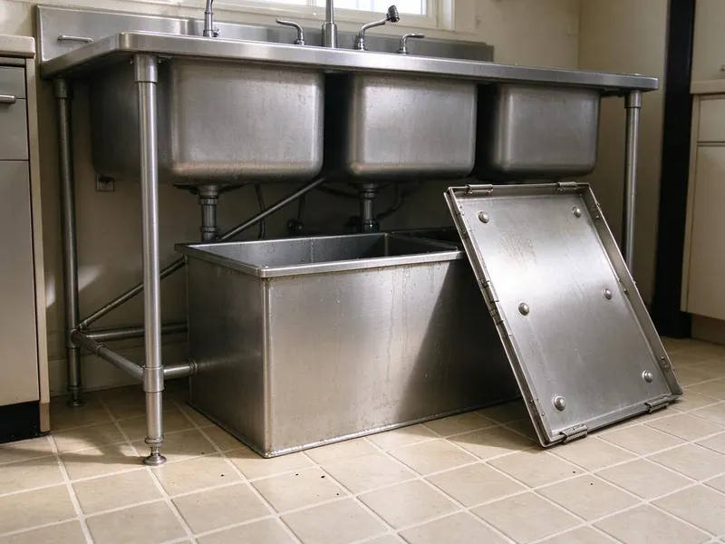
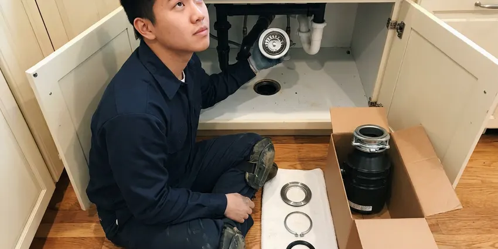

Garbage Disposal Replacement in Burleson, TX
For dependable garbage disposal replacement services in Burleson, TX, look no further than DFJ Plumbing. We handle all major brands and models.
- Fast, Local Service
- Expert Plumbers
- Upfront Pricing
- Quality Parts
Time for a New Garbage Disposal in Burleson, TX?
Don't let a broken disposal disrupt your kitchen routine any longer, contact us for prompt service.
Expert Garbage Disposal Replacement for Burleson, TX Homeowners
At DFJ Plumbing, we provide efficient garbage disposal replacement services throughout Burleson, TX, ensuring your kitchen plumbing operates smoothly again. Our plumbers are adept at removing old units and installing new, reliable disposals.
Our expertise includes:
- Replacing all major garbage disposal brands
- Installing new, powerful disposal units
- Upgrading outdated or broken disposals

Additional Kitchen Plumbing Services in Burleson, TX
Our kitchen plumbing services in Burleson, TX cover sinks, disposals, dishwashers, and grease traps so your kitchen stays clean, safe, and fully functional.




Garbage Disposal Installation in Burleson


Customers
Why Choose DFJ Plumbing for Garbage Disposal Replacement in Burleson, TX?
Our expertise in garbage disposal replacement guarantees a smooth process from start to finish. We focus on proper installation techniques to extend the life of your new appliance.
- Reliable Brands, We work with top-tier brands like InSinkErator, Waste King, and Moen, known for their durability and performance.
- Correct Sizing, Our plumbers help you choose the right horsepower, from 1/3 HP to 1 HP, based on your household's needs and usage.
- Code Compliance, All replacements adhere to local Burleson, TX plumbing codes, ensuring safe and legal operation.
Citywide Coverage
DFJ Plumbing provides comprehensive garbage disposal replacement services across every neighborhood of Burleson. From the bustling downtown areas to the quieter suburbs, our local plumbers are always ready to respond.
Experienced Team
Our team of licensed plumbers has extensive experience with all types of garbage disposal systems, including continuous feed and batch feed models. We've seen and replaced countless units in Burleson homes.
Safety-First Approach
We always adhere to strict safety protocols and local plumbing codes during every garbage disposal replacement. This ensures your new unit operates safely and reliably for years to come in Burleson, TX.
Trusted Certified Burleson Plumbing Services Professionals
At DFJ Plumbing, we take pride in providing certified plumbing services throughout Burleson, TX. Backed by leading industry credentials, our experienced plumbers combine technical skill with genuine customer care. Whether it is repair, installation, or maintenance, we follow strict safety and quality standards to deliver lasting results you can trust.
Call Us Now PHCC Plumbing Contractor Recognition
PHCC Plumbing Contractor Recognition Better Business Bureau (BBB) Accreditation
Better Business Bureau (BBB) Accreditation Angi Certified Pro
Angi Certified Pro ISO 9001 Quality Management Certification
ISO 9001 Quality Management CertificationEfficient Garbage Disposal Replacement Services in Burleson, TX
Standard Garbage Disposal Replacement in Burleson
When your existing garbage disposal fails due to wear and tear, a standard replacement is often the most cost-effective solution. We remove the old unit, thoroughly clean the connection points, and install a brand-new disposal, ensuring proper alignment with the sink drain and secure electrical connections. This service typically takes a few hours and restores full functionality to your kitchen sink. We ensure no leaks are present before considering the job complete.

Upgraded Disposal Installation in Burleson, TX
Many homeowners in Burleson, TX choose to upgrade to a more powerful or quieter garbage disposal during replacement. We can help you select a unit with higher horsepower, such as a 3/4 HP or 1 HP model, which can handle tougher food waste more efficiently. Upgrades often include better insulation for noise reduction and more advanced grinding technologies, providing a significant improvement over older, weaker disposals. We ensure the new unit fits perfectly into your existing plumbing setup.
InSinkErator Brand Replacement in Burleson
InSinkErator is a leading brand in garbage disposals, known for its reliability. Our plumbers are experts at replacing all InSinkErator models, from the Badger series to the Evolution series. We carry common replacement parts and new units to ensure a swift service. Proper installation of an InSinkErator unit involves specific mounting collar procedures and ensuring the discharge tube is correctly aligned to prevent leaks and maximize performance.
Waste King and Moen Disposal Replacement in Burleson, TX
While InSinkErator is popular, we also frequently replace Waste King and Moen brand garbage disposals in Burleson, TX. Waste King units are often favored for their value and EZ-Mount system, while Moen offers competitive features and warranties. Our technicians are proficient with the specific installation requirements for each brand, ensuring your new disposal is installed according to manufacturer guidelines, providing optimal performance and longevity.
Emergency Disposal Replacement in Burleson
A completely broken garbage disposal can lead to a blocked sink, especially if it's leaking or grinding loudly without processing waste. For urgent situations, DFJ Plumbing offers emergency garbage disposal replacement services in Burleson. We prioritize these calls to prevent further kitchen plumbing issues, arriving quickly to remove the faulty unit and install a new one, getting your sink back in working order as soon as possible.
Commercial Garbage Disposal Replacement in Burleson, TX
Restaurants and commercial kitchens in Burleson, TX rely heavily on robust garbage disposals. We provide specialized replacement services for commercial-grade disposals, which are typically larger and more powerful than residential units. These installations require specific electrical and plumbing considerations to handle high-volume waste. Our team ensures the new commercial disposal meets all local health and safety codes, minimizing downtime for your business.
Leaking Disposal Replacement in Burleson
A leaking garbage disposal can cause significant water damage under your sink cabinet and attract pests. Often, leaks indicate internal damage or a cracked housing, making repair difficult or impossible. In these cases, replacement is the best course of action. We swiftly disconnect the old, leaking unit, clean up any water damage, and install a new disposal, ensuring all seals and connections are watertight to prevent future leaks.

Cost-Effective Disposal Replacement in Burleson, TX
While replacing a garbage disposal is an investment, DFJ Plumbing aims to provide cost-effective solutions for Burleson, TX homeowners. We offer transparent pricing and help you choose a new unit that fits your budget without compromising on quality or performance. Sometimes, repairing an old, inefficient unit can cost more in the long run than installing a new, energy-efficient model with a fresh warranty. We provide clear options to help you decide.
Garbage Disposal Replacement Near Me in Burleson, TX
Looking for 'garbage disposal replacement near me' in Burleson, TX? DFJ Plumbing is your local expert, offering prompt and reliable service. Our technicians are familiar with the unique plumbing configurations found in homes throughout the area, ensuring a smooth replacement process.
When your kitchen sink is backed up due to a faulty disposal, you need a plumbing company that responds quickly. We pride ourselves on being the go-to source for garbage disposal replacement near me for residents of Burleson, offering professional service you can trust.
DFJ Plumbing at a Glance
- Fully licensed plumbing team covering Burleson, TX
- Same-day appointments and 24/7 emergency response
- Upfront, flat-rate pricing before work begins
- 4.9-star rated by 812+ Texas customers
Burleson Map
Burleson Information
- Population
- 55,220
- Area codes
- 817/682/469
- Service area
- Burleson and communities within 40 miles
- Nearby
- Mansfield, Arlington, Fort Worth, Grand Prairie
For homes in Burleson, TX, a reliable garbage disposal is essential, especially with Texas's hard water potentially causing mineral buildup and premature wear on older units.
Expert Services
Trust our professionals for reliable DFJ Plumbing solutions in Burleson, TX.
Our Specialized Plumbing Services in Burleson, TX
At DFJ Plumbing, we provide a complete range of plumbing services across Burleson, TX. From leak detection to full system installations, our team ensures fast, precise, and affordable service for both residential and commercial properties. Explore our core services below:


How Our Garbage Disposal Replacement Process Works in Burleson, TX
Our garbage disposal replacement process in Burleson, TX is designed to be straightforward and efficient, minimizing disruption to your home.
Request a Quote
Contact DFJ Plumbing by calling (737) 405-5978 to schedule an appointment. We'll discuss your needs and provide an upfront estimate for the replacement service.
On-Site Assessment
Our licensed plumber will arrive at your Burleson home to assess your current disposal, discuss replacement options, and help you select the best new unit.
Removal & Install
We'll carefully remove your old disposal, prepare the plumbing, and expertly install your new garbage disposal, testing it thoroughly for proper function.
Frequently Asked Questions About Garbage Disposal Replacement in Burleson
The cost for garbage disposal replacement in Burleson, TX typically ranges from $200 to $600. This includes the new unit itself, which can vary from $100 for a basic 1/3 HP model to over $300 for a high-end 1 HP unit, plus labor costs. Factors like the disposal's horsepower, brand, and any necessary plumbing modifications can influence the final price.
Generally, a direct replacement of a garbage disposal with a similar unit does not require a plumbing permit in Burleson, TX. However, if there are significant modifications to your kitchen plumbing or electrical system involved, a permit might be necessary. Our plumbers are knowledgeable about local codes and will advise you if any permits are needed.
To prolong the life of your new disposal, avoid putting fibrous foods like celery, corn husks, or onion skins down it. Also, do not dispose of grease, coffee grounds, or non-food items. Always run cold water before, during, and after use, and grind small amounts of citrus peels or ice cubes periodically to clean the unit.
Yes, new garbage disposals typically come with a manufacturer's warranty, which varies by brand and model, usually ranging from 1 to 10 years. DFJ Plumbing also stands behind our workmanship with our own service guarantee, ensuring your installation is done right the first time.
While it's possible for a handy homeowner to replace a garbage disposal, it involves working with both electricity and plumbing, which can be hazardous if not done correctly. Improper installation can lead to leaks, electrical shorts, and voided warranties. For safety and peace of mind, hiring a professional plumber is recommended.
We replace all major brands of garbage disposals, including InSinkErator, Waste King, Moen, GE, KitchenAid, and Whirlaway. Our plumbers are familiar with the specific installation requirements and features of each brand, ensuring a proper and efficient replacement every time.
Most garbage disposal replacements can be completed within 1 to 2 hours. This timeframe includes disconnecting the old unit, installing the new one, and testing it thoroughly. More complex situations, such as significant plumbing modifications or electrical work, might extend the duration slightly.
For light use in a single-person household, 1/3 HP might suffice. Most homeowners opt for 1/2 HP or 3/4 HP for general use, which handles common food waste well. For large families, frequent cooking, or tougher waste like small bones, a 1 HP unit offers the best performance and durability.
What People Are Saying About Our Plumbing Experts?

Robert G.
The trenchless sewer replacement saved our front yard. They walked us through the camera inspection footage first so we knew exactly what we were paying for.
Sewer Line Replacement · Burleson, TX
Laura S.
I scheduled a water heater replacement, and the team made the process smooth and affordable. The new unit works perfectly, and they cleaned up after completing the job.
Water Heater Replacement · North Richland Hills, TXJames P.
Our commercial plumbing system had a leak under the sink, and DFJ Plumbing handled it professionally. The plumbers arrived quickly and restored everything without disruption to our customers.
Commercial Plumbing · Mansfield, TX
Emily R.
I called DFJ Plumbing for plumbing repair, and the technician was fast, polite, and thorough. They explained the problem clearly and fixed it the same day. I will definitely hire them again. Highly recommended!
Plumbing Repair · Arlington, TX
Mark T.
When our office needed drain cleaning, DFJ Plumbing provided quick, reliable service. The plumber arrived on time and made sure every drain flowed perfectly before leaving. Very satisfied.
Drain Cleaning · Arlington, TX
Daniel K.
A pipe burst at 11 pm and they actually answered. The plumber showed up within the hour, shut everything down, and had us back to normal the next morning. Could not ask for more.
Emergency Plumbing · Grand Prairie, TX